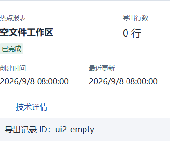

P35 手机导出详情 · 实际子Vue隔离图
数据为现有测试夹具，long/unknown/missing为明确合成边界。仅原手机详情组合已获批，其他状态待审；不是父页面、权限、实际导出或生产验收。
验证证据normal · 390pxknown-zero · 390px
zero · 390pxlong · 390pxunknown · 390pxmissing · 390pxqueued · 390pxleased · 390pxretry_scheduled · 390pxsucceeded · 390px dead_letter · 390pxexpired · 390pxnormal · 760px
dead_letter · 390pxexpired · 390pxnormal · 760px known-zero · 760pxzero · 760pxlong · 760pxunknown · 760pxmissing · 760pxqueued · 760pxleased · 760pxretry_scheduled · 760pxsucceeded · 760pxdead_letter · 760pxexpired · 760px
known-zero · 760pxzero · 760pxlong · 760pxunknown · 760pxmissing · 760pxqueued · 760pxleased · 760pxretry_scheduled · 760pxsucceeded · 760pxdead_letter · 760pxexpired · 760px